계산주의와 인지신경과학 12주차_단어인지와 어휘접속: 상호작용 활성화 모델 구현 및 단어 우월 효과
고려대학교 일반대학원 심리학과
Published
2026년 5월 22일 금요일 4-5교시
[그림 1] 단어인지와 어휘접속: 상호작용 활성화 모델과 단어 우월 효과
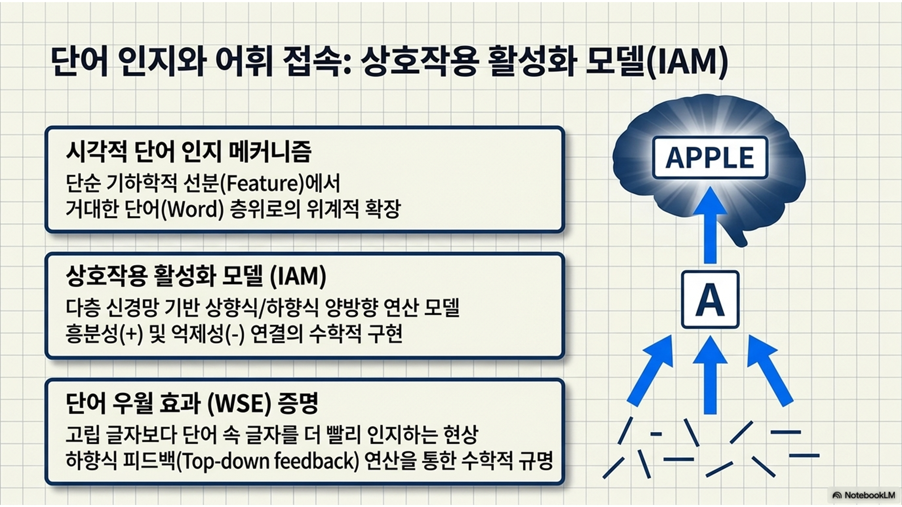
12주차 수업 목표
시각적 단어 인지의 위계적 네트워크 파악: 단순한 기하학적 선분(feature) 자극이 조합되어 알파벳 글자(letter)를 활성화하고, 궁극적으로 뇌 속의 거대한 단어(word) 층위를 일깨우는 구조적 메커니즘을 시스템 차원에서 이해함.
상호작용 활성화 모델(interactive activation model, IAM)의 수학적 구현: 맥클랜드와 루멜하트(McClelland & Rumelhart, 1981)가 제안한 다층 신경망 모델을 바탕으로, 상향식/하향식 연산과 억제성 연결이 어떻게 계산되는지 파이썬 코드로 구현함.
단어 우월 효과(word superiority effect, WSE) 시뮬레이션: 무의미한 고립 글자보다 의미 있는 단어 속에 포함된 알파벳을 더 빠르고 정확하게 인지하는 현상을 하향식 피드백(top-down feedback) 연산을 통해 수학적으로 증명함.
1부: 시각적 단어 인지와 상향식 정보 처리 네트워크
1.1. 단어 인지의 위계적 구조: 선분에서 글자까지
이론적 설명
인간이 종이 위에 인쇄된 잉크 자국을 보고 특정한 의미를 가진 ’단어’로 인식하기까지의 과정은 여러 단계의 정보 처리 위계를 거침.
시각 피질에 맺힌 최초의 정보는 단지 수직선, 수평선, 사선, 곡선과 같은 원초적인 기하학적 ‘선분(feature)’ 자극에 불과함.
이 파편화된 선분들이 모여 특정 알파벳 ‘글자(letter)’ 노드를 구성하고, 글자들이 모여 우리의 심성 어휘집(mental lexicon)에 있는 특정한 ‘단어(word)’ 노드를 차례대로 활성화시킴.
초창기 인지심리학의 정보처리 모형은 눈으로 본 단순한 시각 자극이 ’선분 \(\rightarrow\) 글자 \(\rightarrow\) 단어(의미)’라는 정해진 순서대로만 해석되어 올라가는 상향식 처리만을 강조했음.
심화 해설(3계층 아키텍처의 수학적 표상)
계산 모델링에서 이 위계적 구조는 총 3개의 독립적인 벡터(배열) 층으로 묘사됨.
선분 층(feature level): 입력 자극의 물리적 형태를 감지함. 예를 들어, 글자 ‘A’를 보기 위해서는’/(우상향 사선)‘,’(우하향 사선)‘,’-(가운데 수평선)’을 담당하는 3개의 선분 노드들이 1.0으로 활성화되어야 함.
글자 층(letter level): 26개의 알파벳 각각을 담당하는 노드들의 집합임. 각 글자 노드는 하위 선분 노드들의 활성화 값을 가중합(weighted sum)으로 받아들여 자신의 에너지를 갱신함.
단어 층(word level): 뇌 속에 저장된 수만 개의 영단어 각각에 대응하는 거대 노드들의 집합임. 하위 글자 노드들이 조합되어 특정 단어의 철자 구조와 완벽히 일치할 때 폭발적인 에너지를 뿜어냄.
이 3계층 구조는 수학적으로 각 층을 연결하는 가중치 행렬(\(W\))을 통해 하위 층의 출력값이 상위 층의 입력값으로 전달되는 다층 신경망 연산으로 구현됨.
비유(건축물의 설계와 레고 블록)
단어를 인지하는 과정은 ’레고 블록 조립’에 비유할 수 있음.
바닥에 흩어져 있는 1칸짜리, 2칸짜리 작은 블록 부품들(선분) 자체로는 아무 의미가 없지만, 이것들을 특정 규칙에 맞게 결합하면 단단한 하나의 벽면(글자)이 됨.
그리고 이 벽면 네 개를 정교하게 결합하여 지붕을 얹으면 비로소 온전한 집(단어)이라는 유의미한 최종 결과물이 탄생하는 원리와 같음.
[그림 2] 시각적 단어 인지를 위한 3단계 위계적 정보처리 구조
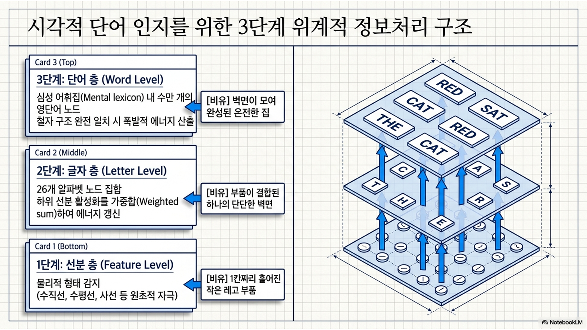
[실습 1-1] 선분(feature) 추출 및 상향식 자극 배열 셋업
왜 ’T’는 마이너스(-0.25)가 나왔을까?
순 입력은 눈으로 본 자극(input)과 뇌의 템플릿 가중치(qeight)를 곱하고 더하는 내적(dot product) 연산으로 계산됨.
입력된 망막 자극: [수직선 0.1, 수평선 0.9, 좌사선 0.8, 우사선 0.7]
글자 ’T’가 뇌 속에서 요구하는 조건(가중치): 수직/수평선은 가산점(+0.5), 사선은 감점(-0.5)
이를 계산해보면 다음과 같은 치열한 덧셈 뺄셈이 벌어짐.
가산점 획득(+0.50): 눈에 수직선(0.1)과 수평선(0.9)이 보이므로, 여기에 +0.5씩 곱해져 총 0.50점의 긍정 에너지를 받음.
감점 폭격(-0.75): 하지만 눈에 좌사선(0.8)과 우사선(0.7)도 뚜렷하게 보임. ’T’라는 글자에는 절대 사선이 들어가면 안 되므로, 여기에 -0.5씩 곱해져 총 -0.75점의 거대한 페널티를 받음.
최종 합산: 0.50(가산점) + (-0.75)(감점) = -0.25
결론
수평선이 뚜렷하게 보였음에도 불구하고, ’T’에 절대 있어서는 안 될 불필요한 사선 자극들이 너무 강력하게 들어오는 바람에 감점 폭격이 가산점을 압도해버려 마이너스가 된 것.
“이 자극은 절대 ’T’일 리가 없다!”라고 적극적으로 억압하고 기각하는 상태를 의미.
뇌는 들어오면 안 되는 정보에 대해 마이너스 감점을 때림으로써, 오답 후보(‘T’)를 초기 단계에서부터 수면 아래로 무자비하게 수몰시켜버림. \(\Rightarrow\) 그 덕분에 사선을 필요로 하는 진짜 정답 후보(‘A’)만이 방해받지 않고 빠르게 승리하여, 우리가 찰나의 순간에 단일한 글자를 명확하게 인식할 수 있게 되는 것
Code
# =========================================================================# [실습 1-1] 선분(feature) 추출 및 상향식 자극 배열 셋업# =========================================================================# 고차원 다차원 행렬 및 수치 연산을 빠르게 수행하기 위해 NumPy 라이브러리를 고유 별칭인 np로 불러옴import numpy as np# 시뮬레이션 결과를 직관적인 2차원 그래프나 차트로 시각화하기 위해 Matplotlib의 pyplot 모듈을 plt로 불러옴import matplotlib.pyplot as plt# ---------------------------------------------------------# 1. 시스템 계층 크기 및 노드 정의# ---------------------------------------------------------# 모델이 추출할 기하학적 선분의 총 개수를 4개로 정의함(0:수직선[|], 1:수평선[-], 2:좌사선[\], 3:우사선[/])num_features =4# 신경망 시스템이 최종 분류 및 인지할 대상 글자(알파벳) 노드의 총 개수를 3개로 정의함num_letters =3# 각 글자 노드의 순서와 매칭되는 문자열 라벨을 리스트 형태로 저장하여 나중에 시각화나 텍스트 출력 시 사용함letter_names = ['T', 'A', 'X']# ---------------------------------------------------------# 2. 각 글자의 이상적인 선분 템플릿(딕셔너리 사전) 정의# ---------------------------------------------------------# 각 알파벳 글자가 물리적으로 어떤 선분들의 조합으로 구성되어 있는지 이상적인 이진 템플릿(딕셔너리 사전)으로 선언함ideal_letter_templates = {# 글자 'T'는 0번(수직선)과 1번(수평선) 선분만 존재하고 사선들은 전혀 없음 [1, 1, 0, 0] 배열 표상'T': np.array([1.0, 1.0, 0.0, 0.0]), # 글자 'A'는 수직선은 없고 1번(수평선), 2번(좌사선), 3번(우사선)이 결합된 형태 [0, 1, 1, 1] 배열 표상'A': np.array([0.0, 1.0, 1.0, 1.0]),# 글자 'X'는 수직선과 수평선 없이 오직 2번(좌사선)과 3번(우사선) 교차선만 존재함 [0, 0, 1, 1] 배열 표상'X': np.array([0.0, 0.0, 1.0, 1.0])}# ---------------------------------------------------------# 3. 외부 시각 입력(stimulus) 셋업# ---------------------------------------------------------# 피험자의 눈을 통해 실제로 인쇄물이나 스크린에서 입력된 불완전하고 노이즈가 낀 현실 세계의 선분 자극 에너지 벡터를 생성함# 순서대로 수직선은 거의 안 보이고(0.1), 수평선은 매우 선명하며(0.9), 사선들은 다소 흐릿하게(0.8, 0.7) 망막에 맺힌 상황을 뜻함input_stimulus = np.array([0.1, 0.9, 0.8, 0.7]) # 입력 자극 배열이 정상적으로 세팅되었음을 포맷 스트링 형식을 이용하여 콘솔창에 문자열과 함께 출력함print(f"-> 1단계 셋업 완료: 눈을 통해 입력된 선분 자극 벡터는 {input_stimulus} 임.")# 해당 선분 자극들이 다음 단계인 상향식 전파를 통해 글자 층으로 도달할 것임을 안내하는 텍스트와 줄바꿈(\n)을 함께 출력함print("-> 이 시각적 자극 에너지가 이제 상향식 경로를 타고 글자 층으로 쏘아 올려질 예정임.\n")
-> 1단계 셋업 완료: 눈을 통해 입력된 선분 자극 벡터는 [0.1 0.9 0.8 0.7] 임.
-> 이 시각적 자극 에너지가 이제 상향식 경로를 타고 글자 층으로 쏘아 올려질 예정임.
1.2. 층간 흥분성/억제성 연결과 상향식 네트워크
이론적 설명
시각적 단어 인지 시스템이 무수한 시각 정보의 홍수 속에서 결정을 내리기 위해서는 정답을 밀어주는 힘뿐만 아니라 오답을 적극적으로 제거하는 힘이 필수적임.
흥분성 연결(excitatory connection)
서로 호환되는 정보끼리는 에너지를 주고받으며 활성화를 증폭시킴
예: 수직선 ‘|’ 선분이 눈에 들어오면, 글자 ‘T’, ‘H’, ‘E’ 노드에 긍정적인 활성화 에너지를 줌.
억제성 연결(inhibitory connection)
서로 모순되거나 엉뚱한 정보끼리는 활성화를 깎아내리며 억압함.
예: 곡선 ‘O’ 선분이 눈에 들어오면, 곡선이 필요 없는 글자 ‘T’나 ’E’ 노드에는 강력한 마이너스 자극을 주어 활동을 즉시 소거함.
심화 해설(네트워크 가중치 행렬 모델링)
상향식으로 글자 층이 받는 ‘순 입력(net input)’
정의: 순 입력이란 특정 뉴런이 자신과 연결된 수많은 하위 뉴런들로부터 전달받은 모든 ’흥분성 가산점(+)’과 ’억제성 감점(-)’을 가중치에 따라 수학적으로 곱하고 모두 더하여 산출해낸 최종적인 ’수신 에너지 총합’을 가리킴.
인간의 망막에 맺힌 불완전한 자극 벡터가 이 가중치 행렬을 통과하는 순간, 자신의 템플릿(이상적인 철자 기준)과 가장 유사한 글자 노드는 양수 에너지를 듬뿍 받아 점수가 치솟고, 템플릿과 어긋나는 글자 노드는 음수 타격을 받아 수면 아래로 가라앉게 됨.
비유(면접관의 가산점과 감점 시스템)
층간 연결 가중치는 ’면접관의 채점표’와 같음.
흥분성 연결: 특정 부서(글자 ‘A’)에서 원하는 인재상(선분 템플릿)이 있을 때, 지원자가 그 요건을 갖추고 오면 가산점(+)을 줌.
억제성 연결: 하지만 지원자가 부서 성격과 완전히 반대되는 불필요한 스펙을 들이밀면, 오히려 면접관은 감점(-) 처리를 해버림.
뇌 역시 단순히 들어온 선분의 개수만 세는 것이 아니라, “내가 원하지 않는 선분이 들어왔는가?”를 깐깐하게 따져 감점 테러를 가함으로써 오류를 방지함.
[그림 3] 뇌 속의 상향식 흥분 및 억제성 연결망 구조
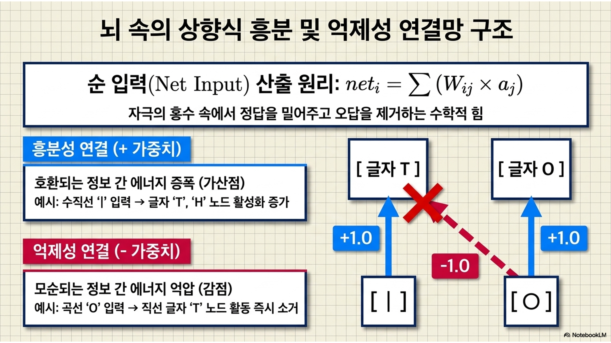
[실습 1-2] 선분-글자 가중치 행렬 생성 및 상향식 순 입력(net input) 산출
Code
# =========================================================================# [실습 1-2] 선분-글자 가중치 행렬 생성 및 상향식 순 입력(net input) 산출# =========================================================================# ---------------------------------------------------------# 1. 층간 가중치 행렬 생성(feature -> letter)# ---------------------------------------------------------# 3개의 글자 노드가 4개의 선분 노드로부터 에너지를 전달받는 통로인 3행 4열 [3 x 4] 크기의 가중치 행렬 공간을 모두 0으로 가득 채워 생성함W_feature_letter = np.zeros((num_letters, num_features))# 서로 호환되고 필요한 정보가 교차될 때 점수를 밀어주고 연결을 강화할 양수(+) 형태의 흥분성 시냅스 연결 강도 값을 정의함excitatory_weight =0.5# 서로 모순되거나 불필요한 노이즈 자극이 들어왔을 때 점수를 깎아내릴 음수(-) 형태의 억제성 시냅스 연결 강도 값을 정의함inhibitory_weight =-0.5# ideal_letter_templates 딕셔너리의 키(글자이름)와 값(선분배열) 쌍을 꺼내며, 동시에 인덱스 번호 i(0, 1, 2)[글자 개수 3개]를 부여해가며 반복 루프를 가동함for i, (letter, features) inenumerate(ideal_letter_templates.items()):# 해당 글자가 가진 4개의 기하학적 선분 원소들을 하나씩 순회하며, 그 원소의 인덱스 위치인 j(0, 1, 2, 3)[선분 종류 4개]와 선분 유무 값 f를 매칭함for j, f inenumerate(features):# 만약 이상적인 템플릿 정보에서 해당 위치의 선분 값(f)이 1.0이라는 것은 글자를 구성하는 필수적인 뼈대라는 의미임if f ==1.0:# 3행 4열의 가중치 행렬 중 i번째 글자와 j번째 선분이 만나는 고유 교차점에 흥분성 가중치(+0.5) 가산점을 부여함 W_feature_letter[i, j] = excitatory_weight# 만약 템플릿상에 선분이 존재하지 않는다(0.0)는 것은 해당 글자를 인지하는 데 들어오면 안 되는 방해물이라는 의미임else:# i번째 글자와 j번째 선분의 연결 가중치 교차점에 억제성 가중치(-0.5) 감점 테러 값을 강제로 할당함 W_feature_letter[i, j] = inhibitory_weight# ---------------------------------------------------------# 2. 행렬 내적을 통한 상향식 활성화 에너지(net input) 산출# ---------------------------------------------------------# [연결주의 핵심 연산] 구축된 [3 x 4] 크기의 층간 가중치 행렬과 [4 x 1] 형태의 망막 입력 자극 벡터를 행렬 내적(np.dot) 연산으로 충돌시킴# 이 연산을 통해 각 4개 선분이 보낸 신호가 통로를 지나며 가중치가 곱해지고 최종적으로 3개 글자 노드 각각에 도달하는 '순 입력' 배열이 탄생함net_input_letters = np.dot(W_feature_letter, input_stimulus)# ---------------------------------------------------------# 3. 산출 결과 출력 # ---------------------------------------------------------# 상향식 계산이 끝났으므로 수신 결과를 보여주기 위한 대제목 세션 문구를 콘솔창에 한 줄 줄바꿈하여 깨끗하게 출력함print("\n[각 글자 노드가 하위 선분 층으로부터 받은 순 입력 결과]")# 순 입력 결과 배열(net_input_letters)에 담긴 3개의 원소를 하나씩 순회하면서 인덱스 번호 i와 계산 결과 점수 net을 추출하는 루프를 돎for i, net inenumerate(net_input_letters):# 글자 이름 리스트(letter_names)에서 iㅇ번째 매칭 문자열을 꺼내와 해당 글자가 얻어낸 상향식 에너지를 소수점 둘째 자리(.2f)까지 출력함print(f"글자 '{letter_names[i]}' 노드의 상향식 수신 에너지: {net:.2f}")
[각 글자 노드가 하위 선분 층으로부터 받은 순 입력 결과]
글자 'T' 노드의 상향식 수신 에너지: -0.25
글자 'A' 노드의 상향식 수신 에너지: 1.15
글자 'X' 노드의 상향식 수신 에너지: 0.25
1.3. 층내 측면 억제 메커니즘
이론적 설명
뇌가 애매한 자극을 인지할 때, 여러 글자 후보들이 동시에 비슷한 에너지를 받아 활성화되면 뇌는 혼란(결정 장애)에 빠지게 됨.
상호작용 활성화 모델(interactive activation model, IAM): 이러한 문제를 해결하하기 위해 동일한 층위에 있는 노드들끼리 서로를 물어뜯고 공격하는 측면 억제(lateral inhibition) 메커니즘을 가동함.
측면 억제: 글자 ‘A’의 에너지가 조금이라도 높아지면, ’A’ 노드는 즉각적으로 같은 위치에 있는 ‘T’, ‘X’ 등 다른 25개의 알파벳 노드들에게 강력한 마이너스 억제 신호를 쏘아보내 경쟁자들을 강제로 짓눌러버림.
이 억제 과정을 통해 뇌는 가장 유력한 단 하나의 후보만 살아남게 만드는 승자독식 상태로 빠르게 수렴함.
심화 해설(활성화 한계치와 미분 방정식)
계산 모델에서 노드의 활성화 값(\(a(t)\))은 무한정 폭주하지 않으며, 생물학적 뉴런의 물리적 한계인 최대 활성화 값(Max: 통상 1.0)과 최소 비활성화 값(Min: 통상 -0.2) 사이에서만 진동하도록 강제됨.
노드가 매 시점(\(t\))마다 받는 활성화 변화량(\(\Delta a\))은 다음과 같은 미분 방정식으로 제어됨.
순 입력(\(net\))이 양수일 때: \(\Delta a = (Max - a(t)) \times net - decay \times (a(t) - rest)\)
순 입력(\(net\))이 음수일 때: \(\Delta a = (a(t) - Min) \times net - decay \times (a(t) - rest)\)
방정식의 앞부분(\((Max - a(t))\)): 현재 에너지가 천장(Max)에 다가갈수록 여유 공간이 줄어들어 에너지 상승 폭을 브레이크 밟듯 점진적으로 둔화시키는 안전장치임.
방정식의 뒷부분(\(decay\) 항): 자극이 없을 때 뉴런이 자연적으로 열을 식히며 평범한 기저 상태(\(rest\), 0.0)로 서서히 돌아가는 지수 감쇠 작용을 묘사함.
비유(오디션 프로그램의 치열한 서바이벌)
층내 측면 억제는 서바이벌 오디션 프로그램의 ’네거티브 공세’와 같음.
무대 위에 선 수십 명의 후보들(알파벳 노드)은 오직 단 한 명만 1등으로 데뷔할 수 있음. 따라서 내 점수가 1점이라도 올라가면, 그 즉시 내 권력을 이용해 양옆에 있는 경쟁자들에게 감점 폭탄을 투하하여 무대 밑으로 끌어내려버리는 치열한 생존 게임을 벌임.
또한 미분 방정식의 한계치(Max)는 온도 조절기의 ’리미터’와 같아서, 아무리 인기가 폭발하는 후보라도 점수가 무한대로 치솟아 시스템을 붕괴시키는 것을 막아주는 물리적 제어기 역할을 함.
[그림 4] 동일 층위 내 경쟁 노드 간의 측면 억제 구조
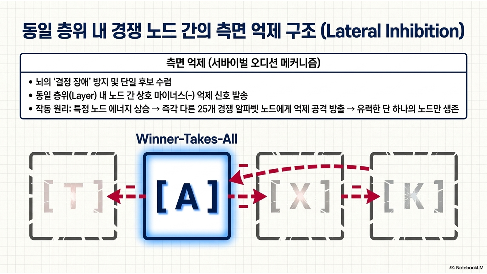
[실습 1-3] 활성화 한계(Max/Min) 미분 방정식을 적용한 글자 인식 수렴 시뮬레이션
[그림 5] 미분 방정식에 기반한 활성화 갱신 곡선 및 에너지 수렴 궤적
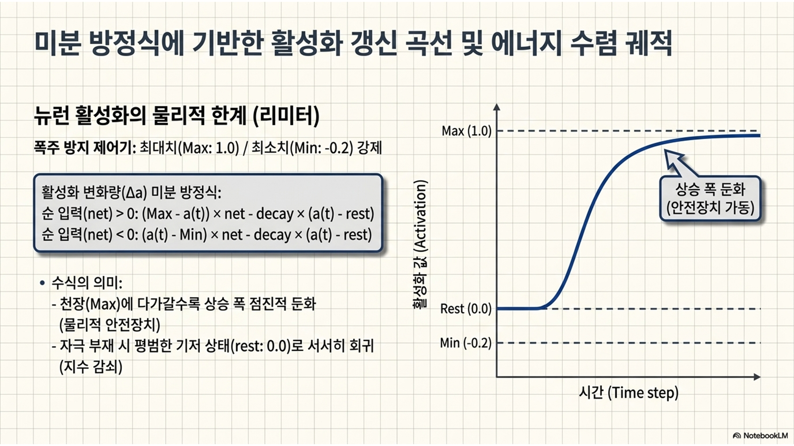
Code
# =========================================================================# [실습 1-3] 활성화 한계(Max/Min) 미분 방정식을 적용한 글자 인식 수렴 시뮬레이션# =========================================================================# ---------------------------------------------------------# 1. 생물학적 활성화 한계 및 파라미터 세팅# ---------------------------------------------------------# 생물학적 뉴런이 가질 수 있는 이론상의 최대 포화 흥분 임계값(에너지 천장)을 1.0으로 엄격하게 선언함MAX_ACT =1.0# 강한 거부나 측면 억제를 받았을 때 가라앉을 수 있는 뉴런의 최대 비활성화 임계값(에너지 바닥)을 -0.2로 선언함MIN_ACT =-0.2# 외부 자극이 차단되거나 시간이 충분히 흘렀을 때 자연스럽게 복원되는 뉴런의 평상시 기본 휴식 레벨을 0.0으로 설정함REST_ACT =0.0# 자극 유입이 멈춘 상태에서 매 사이클마다 뉴런이 머금고 있던 열(에너지)을 공중으로 소멸시키는 감쇠율을 5%로 정의함DECAY_RATE =0.05# 동일한 글자 층위 내에서 생존 경쟁을 하는 라이벌 노드를 무자비하게 후려칠 음수(-) 형태의 측면 억제 강도 계수를 -0.1로 설정함LATERAL_INHIBITION =-0.1# 글자 노드들이 서로 경쟁하여 단 하나의 최종 결론(정답)에 도달하기까지, 시뮬레이션을 몇 스텝/턴(15번) 동안 가동할지를 고정함num_steps =15# 시간의 흐름(15스텝)에 따라 3개 글자 노드의 활성화 상태 변화 추이를 모니터링하고 기록해둘 3행 15열 크기의 영행렬 저장판을 생성함activation_history = np.zeros((num_letters, num_steps))# 시뮬레이션의 실시간 연산에 사용될 3개 글자 노드의 현재 활성화 에너지를 초기값인 휴식 레벨(0.0) 3개로 구성하여 넘파이 배열로 선언함current_activations = np.array([REST_ACT, REST_ACT, REST_ACT])# ---------------------------------------------------------# 2. 측면 억제 네트워크 연산 루프 가동# ---------------------------------------------------------# 루프가 가동되며 서바이벌 승자독식이 시작됨을 알리는 서두 텍스트를 콘솔창에 출력함print("[시간 흐름에 따른 글자 층 활성화 수렴 및 승자독식 과정]")# 시간 변수 t가 0부터 14까지 1턴씩 전진하면서 총 15번의 실시간 뉴런 활성화 업데이트 루프를 수행함for t inrange(num_steps):# 이번 시간 턴에서 3개의 글자 뉴런 각각이 최종적으로 획득할 미세한 활성화 변동분(delta a)을 저장해둘 임시 빈 배열을 매 턴마다 초기화함 delta_a = np.zeros(num_letters)# 0번('T'), 1번('A'), 2번('X') 글자 노드를 하나씩 인덱스 번호 i를 이용하여 순차적으로 순회하며 미분 방정식을 연산함for i inrange(num_letters):# 실습 1-2에서 이미 계산을 완료해둔 고정된 상향식 선분 수신 점수 배열에서 i번째에 해당하는 글자 고유의 상향식 유입 에너지를 꺼내옴 net_i = net_input_letters[i]# 동일 계층 내 다른 알파벳 노드들이 현재 발화하고 있는 에너지가 나에게 가할 총 측면 억제 누적 타격 수치를 0.0으로 초기화함 lateral_penalty =0.0# 계층 내의 모든 경쟁자 뉴런들을 인덱스 j(0, 1, 2)[글자 개수 3개]를 돌려가며 하나씩 검사하고 나를 향한 공격 신호를 합산함for j inrange(num_letters):# 공격 주체 뉴런 j가 나 자신(i)이 아니어야 하고, 동시에 j 뉴런이 수면 위로 활성화(>0)되어 있는 강력한 생존 상태여야만 공격을 인정함if i != j and current_activations[j] >0:# 경쟁 후보 j의 현재 활성화 크기에 비례하여 측면 억제 계수(-0.1)를 곱한 뒤 내가 받을 누적 타격치에 차곡차곡 더해줌(-) lateral_penalty += LATERAL_INHIBITION * current_activations[j]# 상향식으로 밀어 올려주는 긍정 에너지(net_i)와 옆집 경쟁자들이 가해온 측면 억제 감점(lateral_penalty)을 결합하여 '총 순 입력'을 도출함 total_net = net_i + lateral_penalty# [미분 방정식 분기 처리] 계산된 최종 총 순 입력이 0보다 큰 양수(+)인 경우, 뉴런을 흥분시키는 힘이 더 우세한 상황임if total_net >0:# 흥분 미분 방정식 가동: 남은 천장 공간(MAX - 현재)에 총 순 입력을 곱하고, 기저로 돌아가려는 자연 소멸(decay)을 뺌 delta_a[i] = (MAX_ACT - current_activations[i]) * total_net - DECAY_RATE * (current_activations[i] - REST_ACT)# 총 순 입력이 0 이하인 음수(-)인 경우, 나를 짓누르고 강제로 억압하는 억제성 에너지가 신경망 내에서 더 우세한 상황임else:# 억제 미분 방정식 가동: 남은 바닥 공간(현재 - Min)에 총 순 입력을 곱하고(음수 곱이므로 하락 유도), 마찬가지로 자연 감쇠를 반영함 delta_a[i] = (current_activations[i] - MIN_ACT) * total_net - DECAY_RATE * (current_activations[i] - REST_ACT)# 3개 글자 노드의 독립적인 미분 방정식 연산이 끝나면 현재 실시간 활성화 에너지 배열(current_activations)에 활성화 에너지 변동분(delta_a)을 한 번에 더해줌 current_activations += delta_a# 업데이트가 완료된 따끈따끈한 현재 시점의 활성화 상태 벡터 전체를 3행 15열 기록판(activation_history)의 t번째 열에 박제해둠 activation_history[:, t] = current_activations# 너무 잦은 출력을 방지하기 위해, 매 5턴 단위(5, 10, 15번째 스텝)가 완성되는 순간에만 현재 뇌 내의 점수를 콘솔창에 찍어줌if (t+1) %5==0:# 원소 값을 포맷팅하여 소수점 셋째 자리(.3f)까지 깨끗하게 정렬된 가시성 좋은 텍스트 정보로 출력함print(f"Step {t+1:2d} | 'T': {current_activations[0]:.3f} | 'A': {current_activations[1]:.3f} | 'X': {current_activations[2]:.3f}")# ---------------------------------------------------------# 3. 승자독식 궤적 시각화# ---------------------------------------------------------# 동적 평형 수렴 과정 전체를 플롯하기 위해 가로 7인치, 세로 4인치 비율의 새로운 시각화 캔버스 창을 오픈함plt.figure(figsize=(7, 4))# 차례대로 글자 'T'(회색), 'A'(진홍색), 'X'(어두운 파란색)에 매칭하여 매끄러운 궤적 선을 그려낼 색상 명칭 리스트를 선언함colors = ['gray', 'crimson', 'darkblue']# 3개의 알파벳 후보 각각의 역사 기록을 한 줄씩 꺼내어 2차원 시계열 선 그래프로 표현하기 위한 단독 루프를 수행함for i inrange(num_letters):# X축은 1부터 15까지의 정수 스텝, Y축은 해당 i번째 뉴런의 15턴 동안의 활성화 궤적 배열을 지정하여 마커가 달린 실선으로 플로팅함 plt.plot(range(1, num_steps +1), activation_history[i, :], marker='o', color=colors[i], label=f"Letter '{letter_names[i]}'", linewidth=2)# 인지 모델링 연구 논문 스타일 규격에 맞춰 그래프의 대제목을 굵고 크게 명시함plt.title("Lateral Inhibition and Winner-Takes-All Dynamics", fontsize=14, fontweight='bold')plt.xlabel("Processing Time (Steps)", fontsize=12) # X축 하단 라벨에 정보 처리의 진전 단위를 뜻하는 '처리 시간(스텝)'을 명시함plt.ylabel("Activation Level", fontsize=12) # Y축 좌측 라벨에 뉴런의 실시간 에너지를 뜻하는 '활성화 수준'을 명시함plt.axhline(MAX_ACT, color='red', linestyle=':', label='Max (1.0)') # 에너지가 도달할 수 있는 천장 한계선 위치에 빨간색 점선을 가로로 그어줌plt.axhline(MIN_ACT, color='blue', linestyle=':', label='Min (-0.2)') # 억제되어 도달할 수 있는 바닥 한계선 위치에 파란색 점선을 가로로 그어줌plt.legend(loc='center right', fontsize=11) # 각 선이 어떤 글자 후보인지 구별할 수 있도록 범례 박스를 우측 중앙 공간에 띄움plt.grid(True, linestyle='--', alpha=0.5) # 수치 판단을 수월하게 돕기 위해 배경판에 투명도 50%의 옅은 대쉬 형태의 격자 가이드망을 깔아줌plt.show() # 모든 시각화 요소가 완벽하게 결합된 최종 동적 수렴 수치 그래프를 화면 위에 띄워 완성함
[시간 흐름에 따른 글자 층 활성화 수렴 및 승자독식 과정]
Step 5 | 'T': -0.165 | 'A': 0.957 | 'X': 0.547
Step 10 | 'T': -0.178 | 'A': 0.956 | 'X': 0.689
Step 15 | 'T': -0.179 | 'A': 0.956 | 'X': 0.734
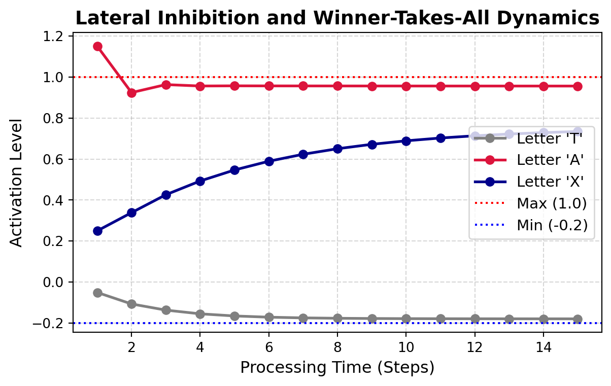
2부: 하향식 피드백과 단어 우월 효과 시뮬레이션
2.1. 지각을 지배하는 지식: 단어 우월 효과의 패러다임
이론적 설명
1969년 제안된 라이커-휠러 패러다임(Reicher-Wheeler paradigm)은 인간의 시각적 단어 인지 연구에 큰 영향을 끼친 중요한 발견임.
피험자에게 매우 짧은 시간(수십 ms) 동안 타겟 자극을 보여준 뒤 시각적 마스크(mask: 노이즈)로 덮어버림. 그 후 “방금 본 자극의 마지막 글자가 ’D’였습니까, ’K’였습니까?”라고 질문함.
놀랍게도, 피험자들은 고립된 알파벳 ‘K’ 한 글자만 단독으로 보여주었을 때보다, 의미 있는 영단어인 ‘WORK’ 속에 포함된 ’K’를 찾으라고 할 때 훨씬 더 빠르고 정확하게 정답을 맞힘.
심지어 철자를 무작위로 섞은 무의미한 철자열 ‘ORWK’ 속의 ’K’보다도, 유의미한 단어 속의 ’K’를 훨씬 잘 알아봄. 의미 있는 맥락이 개별 지각을 압도하는 이 현상을 단어 우월 효과(word superiority effect, WSE)라고 부름.
심화 해설(상향식 모델의 모순과 하향식 피드백의 도입)
기존의 순차적인 상향식 정보처리 모델(선분 \(\rightarrow\) 글자 \(\rightarrow\) 단어)로는 이 단어 우월 효과를 절대 설명할 수 없음.
만약 하위 글자를 완벽히 해독한 후에야 상위 단어를 파악할 수 있다면, 논리적으로 볼 때 고립된 글자 1개를 읽는 것이 복잡한 단어 4글자를 다 읽어내는 것보다 무조건 더 빠르고 쉬워야 하기 때문임.
이 치명적인 모순을 해결하기 위해 계산주의 인지과학은 하향식 피드백이라는 개념을 수학 모델에 도입함.
망막에서 들어온 불완전한 상향식 시각 정보(초기 시각 피질에서 추출되는 가장 기초적인 정보인 선분 정보)가 단어 층위를 미세하게 자극하는 순간, 활성화되기 시작한 거대 단어 노드(예: ‘WORK’)는 즉시 자신의 아랫단에 있는 철자 노드들(W, O, R, K)을 향해 거꾸로 엄청난 양의 흥분성 피드백 에너지를 쏟아부음.
결과적으로 ‘K’ 노드는 밑에서 올라오는 선분 자극뿐만 아니라, 위에서 폭포수처럼 쏟아져 내려오는 단어의 의미적 지원 사격을 동시에 받게 되어 활성화 임계치를 순식간에 돌파하게 됨.
비유(흐릿한 사진 속 친구 얼굴 찾기)
단어 우월 효과는 안개 낀 단체 사진 속에서 내 친구를 알아보는 상황과 정확히 일치함.
얼굴 윤곽선(선분) 하나만 허공에 덩그러니 떠 있으면 그게 누구인지 단번에 맞히기 매우 힘듦.
하지만 그 사람이 내가 평소에 항상 어울려 놀던 친구 4인방의 단체 사진(단어라는 맥락) 속에 서 있다면, 뇌는 흐릿한 실루엣만 보고도 단번에 “아! K구나!” 하고 확신하게 됨. 나의 기존 지식(친구 4인방)이 지각의 빈틈(흐릿한 사진)을 메워주는 ’하향식 피드백’의 마법임.
[그림 6] 라이커-휠러의 단어 우월 효과 실험 패러다임
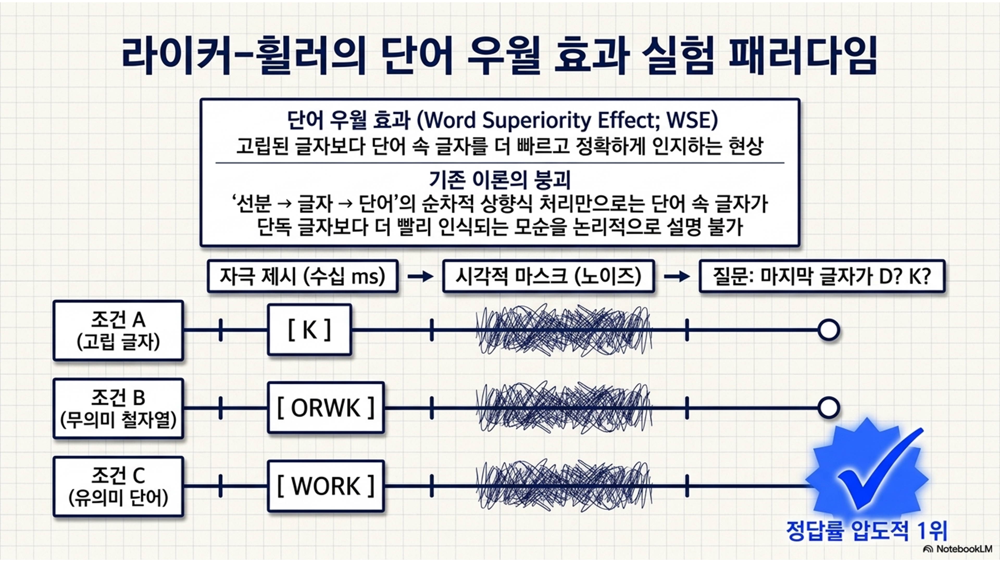
[실습 2-1] 글자-단어 간 양방향 피드백 가중치 행렬 구축
[그림 7] 단어 층에서 글자 층으로 내려꽂히는 하향식 피드백 가중치 구조
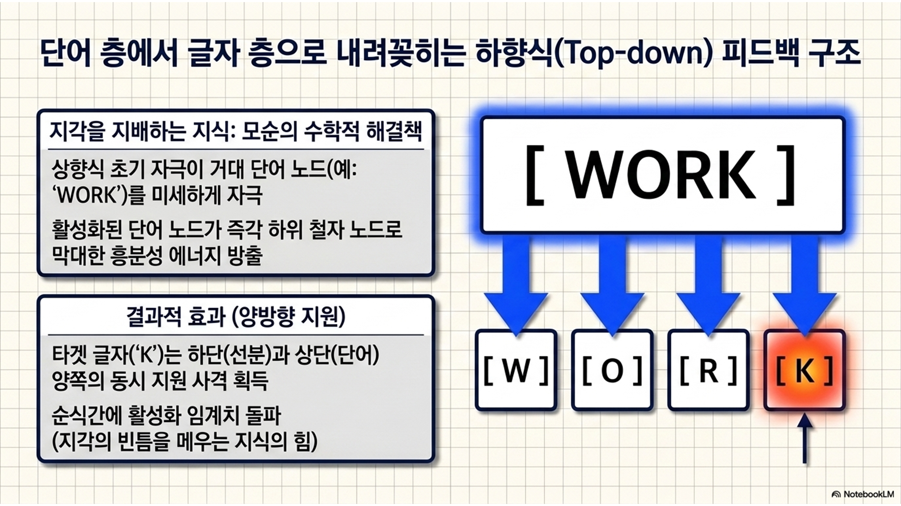
Code
# =========================================================================# [실습 2-1] 글자-단어 간 양방향 피드백 가중치 행렬 구축# =========================================================================# ---------------------------------------------------------# 1. 상위 단어 층 노드 초기화# ---------------------------------------------------------# 심성 어휘집(지식 층위) 사전에 등재되어 인지 시스템이 식별 가능한 총 영단어 개수를 2개로 한정하여 정의함num_words =2# 심성 어휘집 사전 내부의 각 단어 노드 순서와 완벽히 짝을 이루는 구체적인 텍스트 문자열 이름 사전을 리스트 형태로 구성함word_names = ["TAX", "CAT"]# ---------------------------------------------------------# 2. 글자 층 <-> 단어 층 가중치 행렬 구축(top-down)# ---------------------------------------------------------# 단어 층(2개 노드)에서 하위 글자 층(3개 노드: T, A, X)으로 거꾸로 쏟아져내릴 하향식 피드백 3행 2열 [3 x 2] 가중치 행렬판을 생성하고 0으로 초기화함W_word_letter = np.zeros((num_letters, num_words))# 불완전하고 흐릿한 시각 자극을 단어 맥락으로 메워 강력하게 '자동완성'해줄 하향식 흥분 가중치 상수(+0.6)를 설정함feedback_weight =0.6# [TAX 단어 노드 셋업] 단어 'TAX'(인덱스 0)가 활성화되면 첫 번째 위치의 글자 'T'(인덱스 0) 노드를 향해 거꾸로 보상 에너지 통로(+0.6)를 개설함W_word_letter[0, 0] = feedback_weight # 단어 'TAX'(인덱스 0)가 활성화되면 두 번째 위치의 글자 'A'(인덱스 1) 노드를 향해 거꾸로 보상 에너지 통로(+0.6)를 개설함W_word_letter[1, 0] = feedback_weight # 단어 'TAX'(인덱스 0)가 활성화되면 세 번째 위치의 글자 'X'(인덱스 2) 노드를 향해 거꾸로 보상 에너지 통로(+0.6)를 개설함W_word_letter[2, 0] = feedback_weight # [CAT 단어 노드 셋업] 단어 'CAT'(인덱스 1)이 활성화되면 자신의 구성 알파벳 중 오직 중간 글자인 'A'(인덱스 1) 노드만을 향해 보상 에너지 통로(+0.6)를 개설함W_word_letter[1, 1] = feedback_weight # 상위 지식이 하위 지각을 역으로 지배하는 '거꾸로 연결망 통로'가 차질 없이 개설되었음을 증명하는 텍스트 문구를 콘솔창에 출력함print("-> 3단계 셋업 완료: 단어 층에서 글자 층으로 쏟아지는 하향식 피드백 가중치 행렬(W_word_letter)이 구축됨.")# 이 연산 통로를 통해 지식의 공명(자동완성)이 일어날 구체적인 인지과학적 메커니즘을 직관적으로 풀어낸 보충 설명 문장을 추가 출력함print("-> 만약 'TAX'라는 단어가 지식 층에서 활성화된다면, 하위 층의 'T', 'A', 'X' 노드들은 0.6이라는 폭포수 에너지를 위에서부터 추가로 지원받게 됨.")
-> 3단계 셋업 완료: 단어 층에서 글자 층으로 쏟아지는 하향식 피드백 가중치 행렬(W_word_letter)이 구축됨.
-> 만약 'TAX'라는 단어가 지식 층에서 활성화된다면, 하위 층의 'T', 'A', 'X' 노드들은 0.6이라는 폭포수 에너지를 위에서부터 추가로 지원받게 됨.
2.2. 상호작용 활성화 모델의 전역적 동역학
이론적 설명
완전한 형태의 상호작용 활성화 모델은 외부 자극이 한 방향으로만 흐르는 정적인 시스템이 아님.
상향식 에너지(망막 \(\rightarrow\) 뇌)와 하향식 에너지(지식 \(\rightarrow\) 지각), 그리고 층내 측면 억제(경쟁자 간의 싸움)가 좁은 신경망 골목에서 실시간으로 맹렬하게 충돌하고 섞이면서 네트워크 전체가 동적 평형(dynamic equilibrium) 상태로 수렴해가는 역동적인 동역학 시스템임.
수많은 톱니바퀴가 맞물려 돌아가며 네트워크 전체가 가장 안정적인 특정 단어 인식 상태로 수렴하는 것이 상호작용 활성화 모델 시뮬레이션의 최종 목표임.
심화 해설(통합 순 입력과 양방향 피드백 궤적)
매 스텝(\(t\))마다 특정 글자 노드가 받는 총 통합 순 입력(total net input, \(N(t)\))은 아래 세 가지 힘의 총합임.
선분에서 올라오는 상향식 지원 사격: \(+ \sum W_{feature\_letter} \times a_{feature}\)
단어에서 내려오는 하향식 융단 폭격: \(+ \sum W_{word\_letter} \times a_{word}\)
동일 층위 내 경쟁자들의 측면 억제: \(- \sum W_{lateral} \times a_{lateral}\)
이 세 가지 힘들이 하나로 합쳐진 \(N(t)\) 값이 앞서 배운 활성화 한계 미분 방정식(\(\Delta a\))에 대입되어 글자 노드(뉴런)(예: ‘X’나 ’K’)의 에너지를 갱신함.
특히 글자가 단어를 깨우고, 그 단어가 다시 글자에 피드백을 주며, 그 강해진 글자가 또다시 단어를 더 강하게 깨우는 이 ’재진입 루프(reentrant loop)’야말로 인간 지각의 경이로운 속도를 설명하는 계산주의의 핵심 기제임.
비유(깊은 메아리 계곡과 합창)
이 네트워크의 양방향 재진입 루프는 깊은 산속의 ’메아리 계곡’과 비슷함.
내가 바닥에서 위를 향해 소리를 지르면(상향식 시각 자극), 그 소리가 산봉우리(단어 지식)에 부딪혀 증폭된 메아리가 되어 다시 바닥으로 거세게 쏟아져 내려옴(하향식 피드백).
밑에서 올라가는 소리와 위에서 내려오는 소리들이 계속 중첩되면서, 계곡 전체가 특정한 화음 주파수로 강하게 웅웅거리며 공명함. 뇌 역시 이렇게 지각과 지식이 공명할 때 “단어를 알아보았다”는 인식적 통찰을 획득함.
[그림 8] 상호작용 활성화 모델의 전체 아키텍처 및 재진입 루프
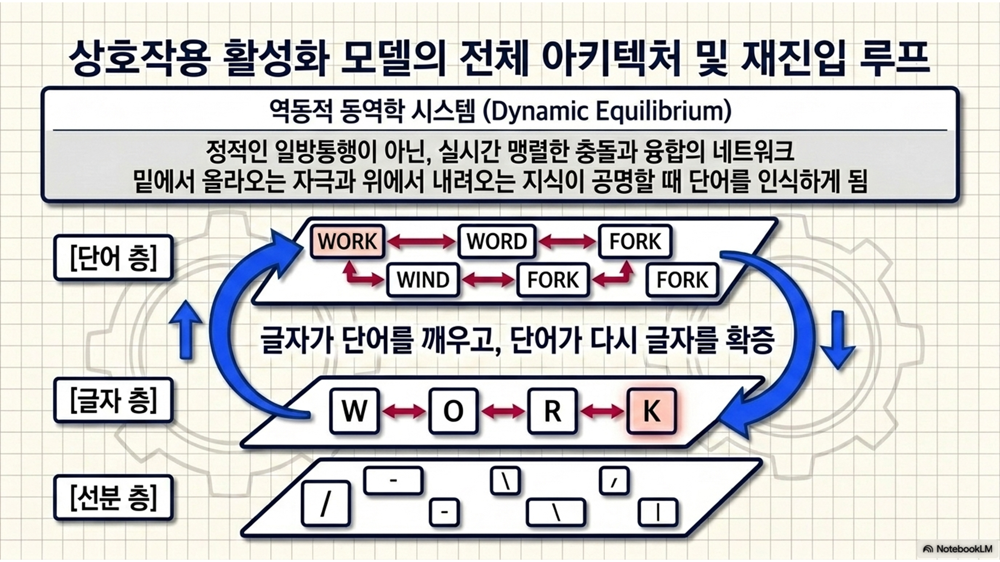
[실습 2-2] 상하향식 양방향 통합 네트워크 및 IAM 루프 시뮬레이션
[그림 9] 상향식 자극과 하향식 피드백 에너지가 통합되어 산출되는 총 활성화 에너지 구조
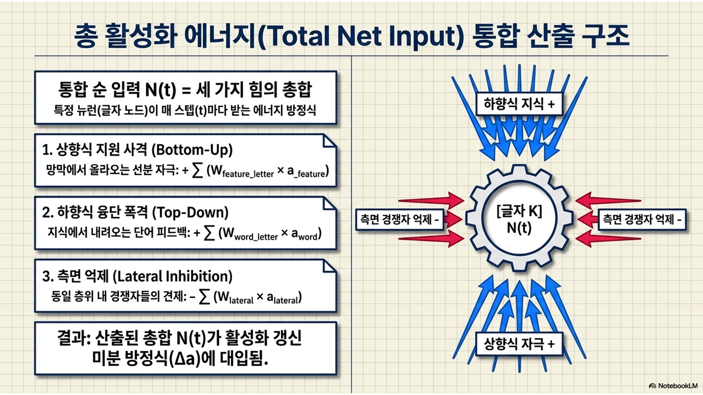
Code
# =========================================================================# [실습 2-2] 상하향식 양방향 통합 네트워크 및 상호작용 활성화 모델 루프 시뮬레이션# =========================================================================# ---------------------------------------------------------# 1. 두 가지 극단적 실험 조건 셋업# ---------------------------------------------------------# 라이커-휠러 실험 패러다임에 따른 단어 우월 효과(WSE)의 발생 격차를 관찰하기 위해 연합 시간 단위를 20스텝으로 확장 정의함num_steps_wse =20# [실험 조건 1 기록장] 아무 맥락 없이 외롭게 홀로 화면에 나타난 '고립된 글자 X' 노드의 20턴간 활성화 변화량을 저장할 배열을 생성함act_X_isolated = np.zeros(num_steps_wse)# [실험 조건 2 기록장] 유의미한 단어 'TAX'와 함께 나타나는 '단어 속 글자 X' 노드의 20턴간 활성화 변화량을 저장할 배열을 생성함act_X_in_word = np.zeros(num_steps_wse)# 고립 조건하에서 구동될 'X' 뉴런의 실시간 활성화 변수를 평상시 휴식 레벨 상태(0.0)로 초기화하여 선언함current_X_isolated = REST_ACT# 맥락 조건하에서 구동될 'X' 뉴런의 실시간 활성화 변수를 평상시 휴식 레벨 상태(0.0)로 초기화하여 선언함current_X_in_word = REST_ACT# ---------------------------------------------------------# 2. 고정 입력 에너지 및 피드백 에너지 산출# ---------------------------------------------------------# 눈(망막)을 통해 들어온 'X' 글자의 실제 기하학적 선분이 지닌 상향식 에너지를 양쪽 조건 모두 동일하게 애매하고 흐릿한 강도인 0.3으로 고정 세팅함bottom_up_X =0.3# 실습 2-1에서 완성해둔 하향식 가중치 행렬판의 2행 0열('TAX' 단어가 가리키는 세 번째 철자 'X' 위치) 통로에서의 피드백 전하량(feedback_weight: 0.6)을 복사해옴top_down_X = W_word_letter[2, 0] # ---------------------------------------------------------# 3. 양방향 네트워크 미분 방정식 루프 가동# ---------------------------------------------------------# 라이커-휠러 패러다임의 계산주의적 재현 시뮬레이션 엔진이 백그라운드에서 가동하기 시작함을 보여주는 문구를 화면에 띄움print("[시뮬레이션 가동: 고립 글자 조건 vs 유의미한 단어 속 글자 조건]")# 시간 변수 t가 0부터 19까지 전진하며 상향식 단독 처리와 상하향식 양방향 공명 처리를 병렬적으로 대비 연산하는 메인 루프를 수행함for t inrange(num_steps_wse):# --- [조건 1: 외로운 싸움] 상향식 단독 조건에서 'X' 뉴런이 받는 순 입력은 오직 망막에서 올라온 물리적 자극(0.3) 하나가 전부임 net_iso = bottom_up_X # 고립 조건 미분 방정식 연산: 에너지가 더 올라갈 수 있는 '남은 여유 공간'(MAX - 현재)에 입력값(net_iso)을 곱하고, 자연적으로 에너지가 식는 감쇠 패널티를 빼서 최종 변동분을 구함 delta_iso = (MAX_ACT - current_X_isolated) * net_iso - DECAY_RATE * (current_X_isolated - REST_ACT)# 계산된 고립 조건 변동분(delta_iso)을 고립 조건의 현재 실시간 활성화 에너지 변수에 계속 누적하여 갱신해줌 current_X_isolated += delta_iso# 한 단계 성장한 고립 조건 'X' 뉴런의 실시간 에너지를 고립 조건 글자 history 기록장(act_X_isolated)의 t 번째 방에 고스란히 저장함 act_X_isolated[t] = current_X_isolated# --- [조건 2: 금수저 지원] 상하향식 양방향 조건에서 'X' 뉴런이 받는 에너지는 망막 자극(0.3)에 상위 지식의 피드백(+0.6)이 합산되어 0.9로 증폭됨 net_word = bottom_up_X + top_down_X # 더 거대해진 통합 순 입력(net_word)을 바탕으로 폭발적인 활성화 에너지 갱신 delta_word = (MAX_ACT - current_X_in_word) * net_word - DECAY_RATE * (current_X_in_word - REST_ACT)# 단어 지식의 '보너스 점수'가 반영되어 큼직하게 계산된 에너지 변동분(delta_word)을 현재 활성화 수치에 누적하여 갱신함 current_X_in_word += delta_word# 지식의 지원 사격으로 폭발적으로 성장한 맥락 조건 'X' 뉴런의 에너지를 단어 속 글자 history 기록장(act_X_in_word)의 t 번째 방에 적립함 act_X_in_word[t] = current_X_in_word# 루프의 모든 미분 업데이트가 오류 없이 완벽히 끝났음을 나타내고 다음 단계 시각화를 안내하는 종결 문구를 출력함print("-> 20스텝 동안의 양방향 미분 방정식 연산이 모두 완료됨. 단어 우월 효과의 수학적 실체를 시각화하겠음.\n")
[시뮬레이션 가동: 고립 글자 조건 vs 유의미한 단어 속 글자 조건]
-> 20스텝 동안의 양방향 미분 방정식 연산이 모두 완료됨. 단어 우월 효과의 수학적 실체를 시각화하겠음.
2.3. 정보이론적 잉여성과 노이즈 강건성
이론적 설명
일상생활에서 우리가 읽는 텍스트는 폰트가 깨져 있거나, 커피 얼룩이 묻어 있거나, 간판의 네온사인이 몇 개 꺼져 있는 등 치명적인 시각적 노이즈에 끊임없이 노출됨.
하향식 피드백 시스템은 이러한 악조건 속에서도 뇌가 정보를 빠르고 정확하게 복원해낼 수 있는 노이즈 강건성(robustness)을 제공함.
의미 있는 단어는 정보이론(information theory) 관점에서 막대한 ’잉여성(redundancy)’을 가짐. \(\Rightarrow\) 몇 개의 철자가 지워지더라도 전체 단어를 유추할 수 있는 충분한 맥락적 힌트를 단어 자체가 품고 있음!
심화 해설(어휘망을 통한 지각적 자동 완성 시뮬레이션)
만약 타겟 글자 위로 커피 얼룩이 떨어져 상향식 순 입력 에너지가 0.3이라는 형편없는 수준으로 하락했다고 가정해보자.
고립된 글자 조건에서는 이 0.3의 입력만으로 자연 감쇠율을 뚫고 한계치 1.0에 도달하기 위해 수십, 수백 스텝의 기나긴 처리 시간이 필요하며, 도중에 억제성 공격이라도 받으면 영원히 인지에 실패하게 됨.
하지만 단어 층위에서 쏟아지는 하향식 피드백 에너지는 0.6에 달함. 이 거대한 지식의 에너지가 상향식 에너지에 더해지면(0.3 + 0.6 = 0.9), 타겟 글자는 단 4~5 스텝 만에 1.0 천장에 도달하여 인지적 결정을 종결지음.
즉 뇌는 물리적인 눈으로 잉크 자국을 일일이 확인해서 글자를 읽는 것이 아니라, 상위 층의 지식이 만들어낸 환상(피드백)을 통해 손상된 정보를 스스로 복원하고 덧칠하여 읽어내는 ‘능동적 환각’ 머신에 가까움.
비유(스마트폰의 문장 자동 완성 기능)
이 놀라운 노이즈 강건성은 스마트폰 키보드의 ‘자동완성’ 기능과 완벽하게 똑같음.
내가 문자로 ’컴퓨’까지만 대충 쳐서 오타가 날 뻔해도(불완전한 상향식 자극), 스마트폰 내부에 내장된 사전 지식(단어 층)이 문맥을 재빨리 파악하여 다음에 올 글자인 ’터’의 활성화를 미리 하향식으로 끌어올려 화면에 띄워줌.
단어 우월 효과 시뮬레이션은 바로 우리 뇌에 내장된 이 신경망 ’자동 완성 알고리즘’을 미분 방정식 코드로 증명해냄.
[그림 10] 고립 글자와 단어 속 글자의 활성화 궤적 비교 및 단어 우월 효과 시각화
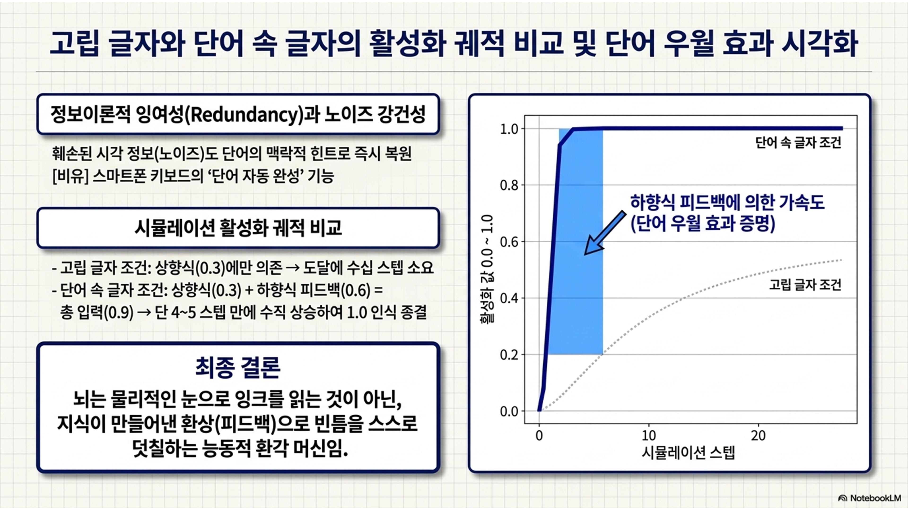
[실습 2-3] 고립 글자 vs. 단어 속 글자의 활성화 궤적 비교 및 단어 우월 효과 시각화 증명
Code
# =========================================================================# [실습 2-3] 고립 글자 vs. 단어 속 글자의 활성화 궤적 비교 및 단어 우월 효과 시각화 증명# =========================================================================# 두 조건 간의 인지적 각성 속도 격차를 명확한 선 곡선으로 대비 도식하기 위해 가로 8인치, 세로 5인치 비율의 그래프 도화지를 마련함plt.figure(figsize=(8, 5))# ---------------------------------------------------------# 1. 두 조건 간의 활성화 시계열 곡선 시각화 증명# ---------------------------------------------------------# [조건 1 라인 플롯] X축은 1부터 20까지의 정수 처리 시간, Y축은 고립 글자 'X'의 데이터 배열을 지정하여 로열블루 색상의 동그라미(o) 점선(--) 그래프를 생성함plt.plot(range(1, num_steps_wse +1), act_X_isolated, marker='o', linestyle='--', color='royalblue', label="Condition 1: Isolated Letter ('X' alone)", linewidth=2.5, markersize=7)# [조건 2 라인 플롯] 똑같은 X축 상에 Y축 조건만 단어 속 글자 'X' 배열로 변환하고, 진홍색 사각형(s) 실선(-) 그래프를 누적 생성함plt.plot(range(1, num_steps_wse +1), act_X_in_word, marker='s', linestyle='-', color='crimson', label="Condition 2: Letter in Word ('X' in 'TAX')", linewidth=2.5, markersize=7)# 이 시뮬레이션의 최종 과학적 결론을 대변하는 타이틀 명칭을 볼드 처리하여 상단 중앙에 고정함plt.title("Simulation of Word Superiority Effect (IAM)", fontsize=15, fontweight='bold')# X축 아래 글자 힌트가 들어오는 하드웨어적 연산의 흐름을 인지시키기 위해 '정보 처리 시간(스텝 단위)'이라는 라벨을 씌워줌plt.xlabel("Information Processing Time (Steps)", fontsize=12)# Y축 왼쪽에 세로로 '타겟 글자 노드의 활성화 수준'(단어 우월 효과 판단의 기준이 되는 타겟 철자 뉴런의 흥분 정도) 라벨을 명시함plt.ylabel("Activation Level of Target Letter Node", fontsize=12)# Y축의 범위를 기저 상태(0.0)부터 폭발 한계치(1.1)까지 설정함plt.ylim(0, 1.1)# 뉴런이 아무리 흥분해도 뛰어넘을 수 없는 물리적 최대 한계 장벽인 1.0 위치에 회색조의 도트 가로 지지선(:)을 그어 천장 한계를 시각적으로 나타냄plt.axhline(MAX_ACT, color='gray', linestyle=':', label='Max Activation Limit (1.0)', linewidth=2)# 파란 점선과 빨간 실선이 각각 어떤 실험적 억압/보상 조건인지를 명확히 분별해주도록 범례 상자를 테두리(frameon)와 그림자(shadow)를 주어 우측 하단에 배치함plt.legend(loc='lower right', fontsize=11, frameon=True, shadow=True)# 가로선과 세로선의 척도 교차점을 단번에 정밀 파악하도록 투명도 60%를 준 대쉬 형태의 모눈망을 그리드로 배경에 깔아줌plt.grid(True, linestyle='--', alpha=0.6)# 지금까지 겹겹이 누적 선언해둔 모든 시뮬레이션 그래픽 원소들을 최종 병합하여 화면에 렌더링 출력함plt.show()
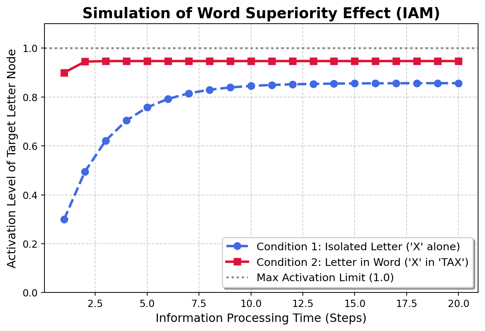
12주차 요약 및 다음 주 예고
요약
상호작용 활성화 모델 아키텍처: 시각적 단어 인지는 단순히 선분이 글자가 되고 글자가 단어가 되는 수동적인 일방통행이 아님. 선분, 글자, 단어 층위가 거대한 가중치 행렬망 안에서 상향식 흥분과 층내 측면 억제를 맹렬하게 주고받으며 단 하나의 인식 상태로 수렴해가는 고도의 동적 네트워크 시스템임을 파이썬 코드로 검증했음.
단어 우월 효과와 하향식 피드백: 지각은 철저히 지식에 의해 지배됨. 단어 층위에서 내려보내는 강력한 하향식 피드백 에너지가 하위 글자 노드의 활성화를 폭발적으로 증폭시키는 기전을 양방향 미분방정식으로 구현함. 이를 통해 인간이 왜 악조건 속에서도 단어 속의 글자를 빠르고 완벽하게 복원해 알아보는지를 컴퓨터 시뮬레이션으로 입증했음.
다음 주 예고
13주차: 문장 처리의 확률적 모형: 지금까지 배운 개별 단어의 인지 과정을 넘어, 단어들이 모여 이루는 문장 수준의 거시적 흐름으로 모델링을 확장함.
예측 가능성과 놀라움(surprisal theory): 인간이 글을 읽을 때 뇌는 항상 멈춰 있지 않고 다음 단어를 확률적으로 예측하고 있음. 이 다음 단어가 뇌의 예측을 빗나갔을 때 발생하는 정보이론적 놀라움(surprisal) 수치와 실제 인간의 안구 운동(읽기 시간 지연) 간의 상관관계를 통계적으로 다룰 것임.
순환 신경망(RNN/LSTM) 기초 맛보기: 과거의 맥락(단어들의 배열 순서)을 메모리에 내장한 채 문장을 시간 순서대로 처리해나가는 순환 신경망 아키텍처의 기초를 학습하고, 이것이 언어심리학적으로 지니는 함의를 살펴봄.